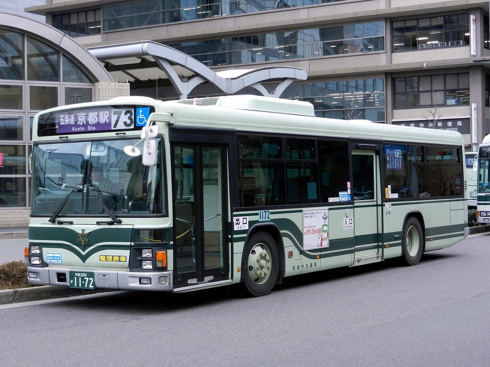

BUS GUIDE
バスの乗り方
京都市バスの基本的な乗車方法を、初めての人向けに順番で説明します。

BEFORE BOARDING
先に、乗り方の流れを確認
京都の市バスは観光地の近くまで行ける一方、時間帯によって混雑します。停留所で系統番号と行き先を確認し、車内では降りる停留所の少し前にボタンを押します。
※ 車両や路線によって乗降方法が異なる場合は、車内表示と案内を優先してください。
01
後ろから乗る
多くの市バスは後ろのドアから乗車します。
02
車内で待つ
降りる停留所の前に降車ボタンを押します。
03
前へ進む
停車後に運転席付近へ移動します。
04
支払って降りる
ICカードまたは現金で支払い、前のドアから降ります。
混雑時：大きな荷物は通路をふさがないようにし、可能なら地下鉄や鉄道を利用します。